FRNotre Terre — Notre Prospérité
ENOur Land — Our Prosperity
SWUdongo Wetu — Ufanisi Wetu
Quatre grands domaines d'intervention au service des communautés et de l'environnement.
Nous formons et accompagnons les petits producteurs dans l'adoption de pratiques agricoles durables afin d'améliorer la productivité et la sécurité alimentaire des communautés.
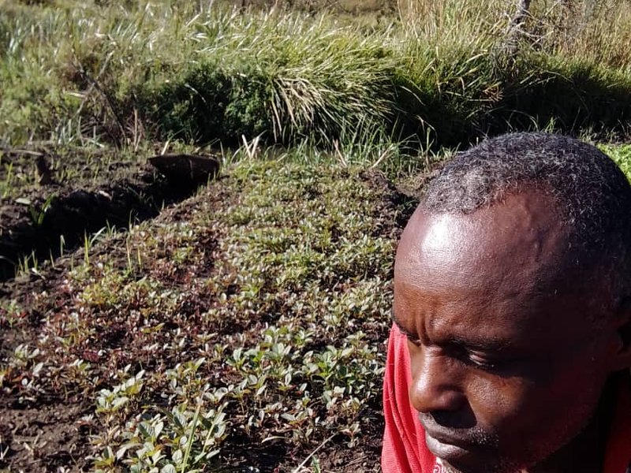
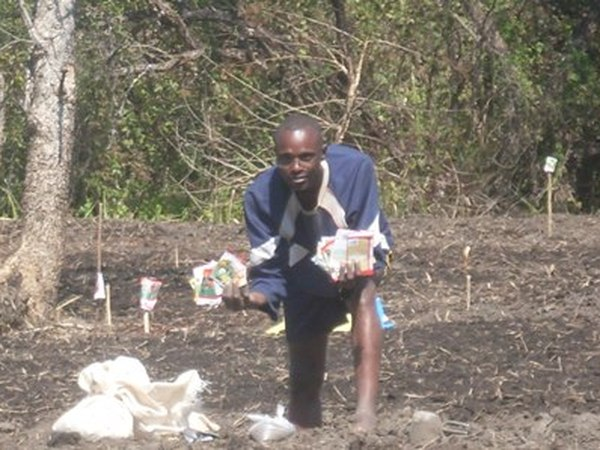
Nous renforçons la capacité des communautés à s'adapter aux effets des changements climatiques à travers des solutions fondées sur la nature et des pratiques d'adaptation locales.
Nous préservons les ressources naturelles et promouvons la protection de l'environnement par des actions concrètes de terrain et de sensibilisation.
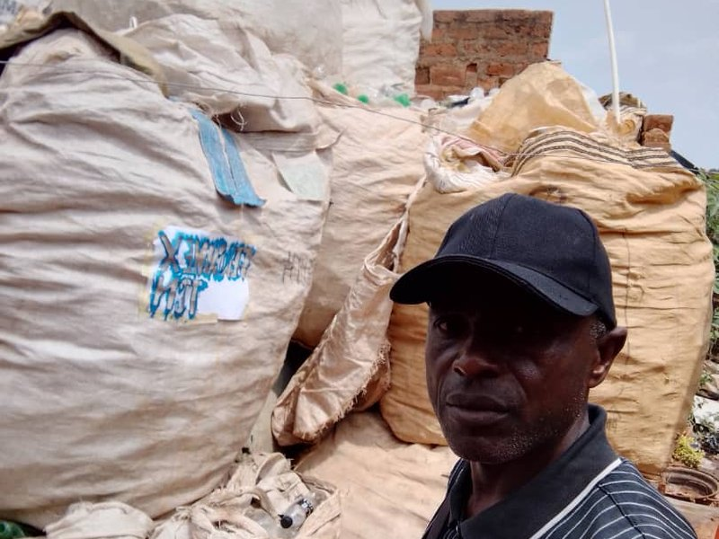
Quelques secondes filmées à Lubumbashi : les bouteilles de plastique collectées, triées et conditionnées en big bags aux couleurs de FERCOMEX-TCN.
Collecte et conditionnement des bouteilles de plastique — Lubumbashi, 2025.
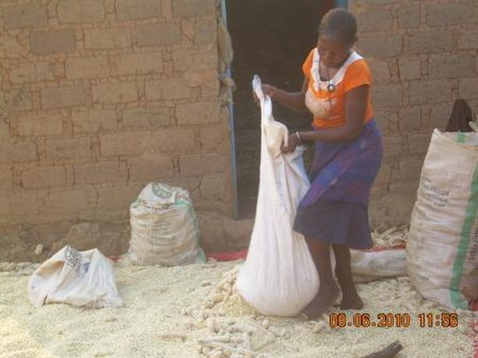
Nous favorisons l'autonomisation économique des femmes, des jeunes et des groupes vulnérables grâce à des activités génératrices de revenus et à l'entrepreneuriat vert.
Chaque don, chaque partenariat renforce directement nos actions auprès des communautés.Nous soutenir
Quinze années de travail sur la ferme communautaire de Kaisala : préparation des sols, cultures, élevage, construction et visites de partenaires.
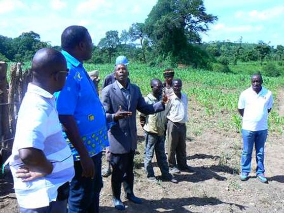
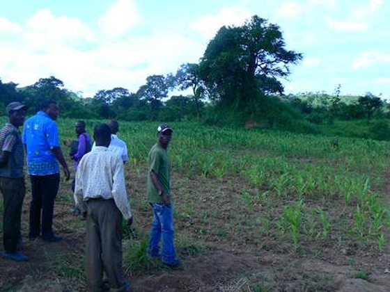
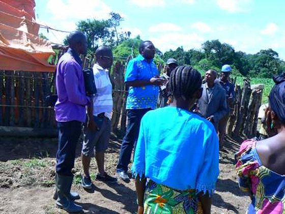
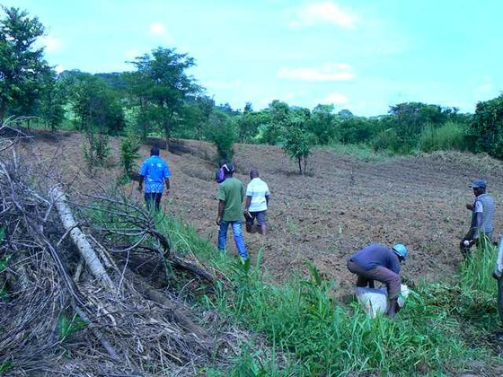
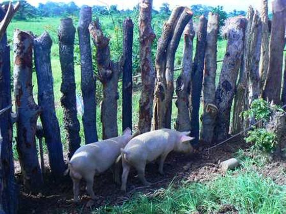
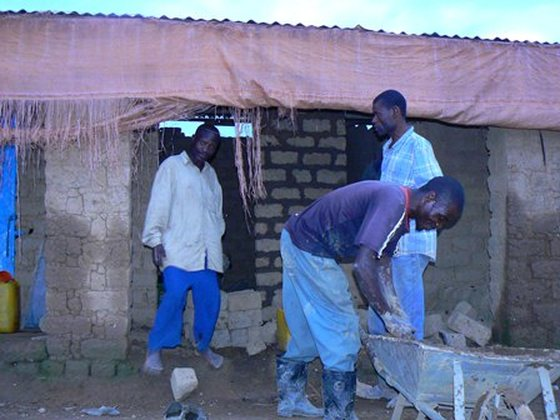
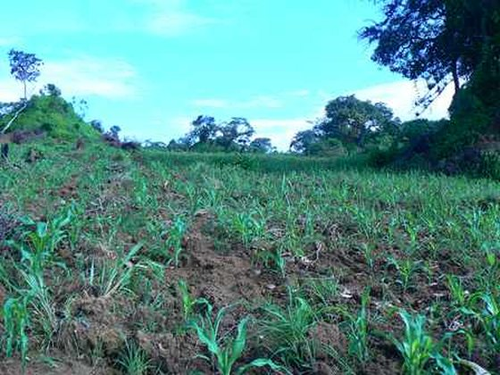
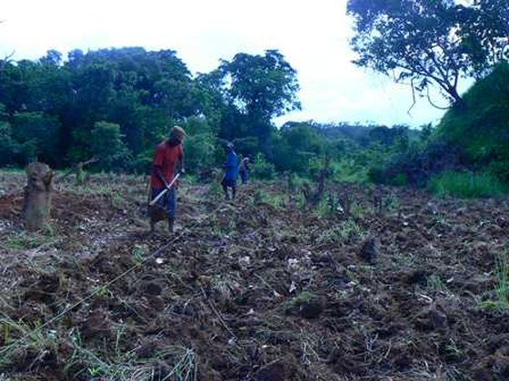
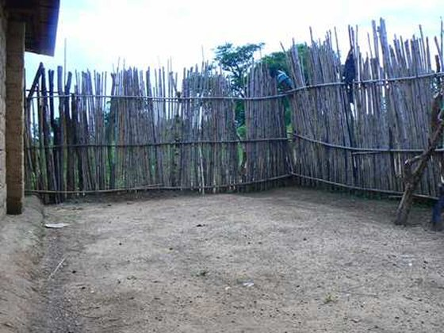
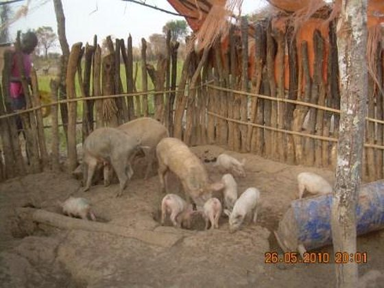
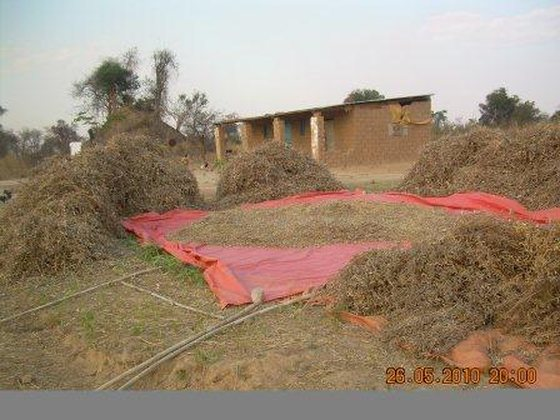
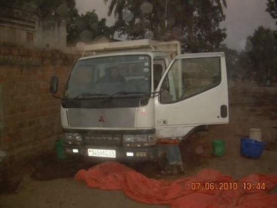
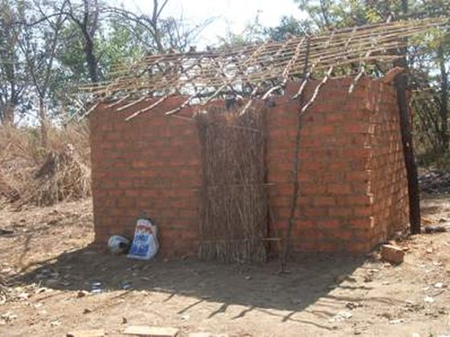
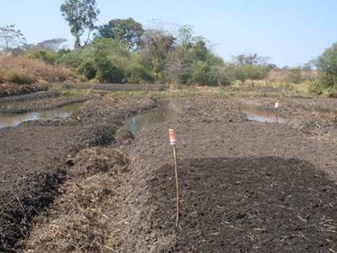
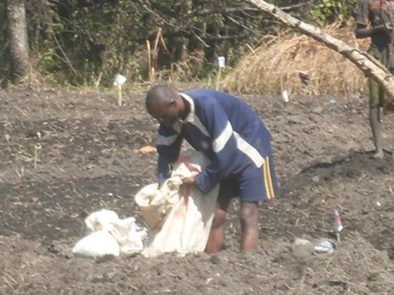
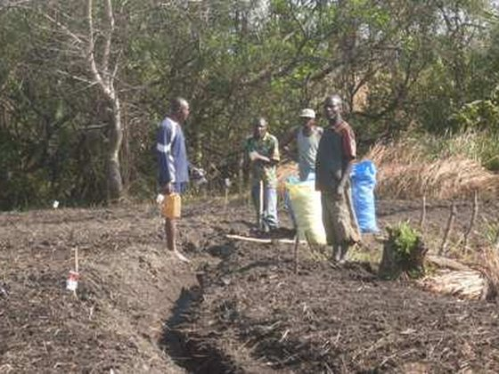